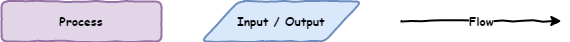
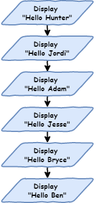
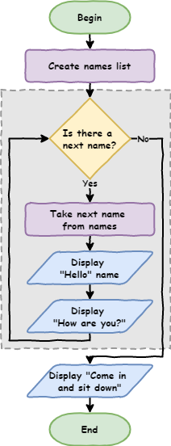
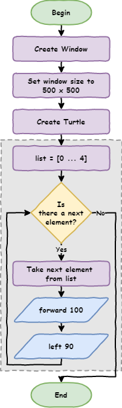

Python Turtle - Lesson 2#
In this lesson you will learn:
about iteration and how to it to reduce your code length
about flowcharts and how to use them to represent program algorithms
how to write Python programs using
forloopshow to use Thonny’s debugger to trace
forloopshow to use the
rangefunction to generate lists of numbers
Part 1: Iteration introduction#
So far with our programming Python has been executing each line of our code one after another. This is called sequential and is the default way programs work. They start at the top and move through the code one line after another. The movement is called the flow of the program (like water, or electricity).
Introduction to flowcharts#
There is a special diagram used to show the flow of computer program. It’s called a flowchart. Flowcharts show each process in a program and how the program moves from one process to the next. We use:
rectangles symbolise processes
parallelograms symbolise inputs or outputs
arrows represent the flow

If we wanted a program to say hello to six people, you would show it in a flowchart like this:

Create a new file in Thonny and call it lesson_2_pt_1.py. Transfer this flowchart code to Python by entering the following code.
1# our iteration program
2
3print("Hello Hunter")
4print("Hello Jordi")
5print("Hello Adam")
6print("Hello Jesse")
7print("Hello Bryce")
8print("Hello Ben")
Since the flow is sequential, Python will start at line 1 and work its way down to line 8.
Run it and see. The following should print to your Shell.
Hello Hunter
Hello Jordi
Hello Adam
Hello Jesse
Hello Bryce
Hello Ben
If you change the order of the code the program will run differently.
1# our iteration program
2
3print("Hello Jesse")
4print("Hello Bryce")
5print("Hello Ben")
6print("Hello Hunter")
7print("Hello Jordi")
8print("Hello Adam")
This code will produce the following results.
Hello Jesse
Hello Bryce
Hello Ben
Hello Hunter
Hello Jordi
Hello Adam
Sequential programming is ok. It starts to become a problem when you deal with bigger programs. You don’t want to have to type everything out.
Imagine if I want to say hello to 500 people, or 1,000 people or more, how tedious will it be to type each line out? There is also other limitations.
What if I decided to say "good morning" rather than "hello"? I would have to change every single line of code.
This might be ok for a small program, but it starts to become a problem in dealing with larger and larger programs. In Digital Technologies we would say that his is not scalable.
Iteration#
If you look at the code you will notice that there is a lot of repetition. Lines 3 to 8 are almost the same, with only the name changing each time.
1# our iteration program
2
3print("Hello Jesse")
4print("Hello Bryce")
5print("Hello Ben")
6print("Hello Hunter")
7print("Hello Jordi")
8print("Hello Adam")
This clashes with the DRY programming principle.

One method for not repeating yourself, is to use iteration (often called loops). They repeat the same code with a slight change each time. This would be perfect for our use, as we want to repeat the code print("Hello", name) with a different name each time.
For loops#
The first loop we will use is the for loop. This is the first control structure we have used. Control structures cause the program to deviate from the default sequential flow.
Change your code, so it is the same as the code below.
1# our iteration program
2
3names = ["Hunter", "Jordi", "Adam", "Jesse", "Bryce", "Ben"]
4
5for name in names:
6 print("Hello", name)
Ok, let’s run the code, but don’t forget PRIMM, and make sure you predict what you think will happen before you run the code.
So let’s investigate by unpacking the code:
Line 3is something we haven’t seen before.Called a list and it works like a real world list.
Consist of a number of items.
Items are in a specific order.
The
[and]indicate the beginning and the end of the list."Hunter","Jordi","Adam","Jesse","Bryce","Ben"are the items in the list. Items are called elements.The elements are separated with commas (
,).A list needs a name (like our turtle and window).
We use
names =to call the listnames.
Line 5is also new, and it is the how we createforloops in Python.foris a keyword identifying this as the beginning of aforloop.in namestells Python to repeat the code below using each element of thenameslist.namerefers to the currentnameselement in use.:tells Python that an indented code block follows.
Line 6is a bit changed as well, it’s indented.The indentation below the
forloop identifies the code that needs to repeat.Indentations can be many lines.
Multi-line indented code is called a code block.
Indents should be four spaces.
Note, in Thonny you can use the
tabkey because Thonny inserts four spaces instead of atabcharacter.
print("Hello", name)tells Python to:print
Helloto the Shellfollowed by current
nameselement in use.
For loop flowchart#
A bit confusing? Let’s try looking at it in a flowchart.
Before we do, we need to learn about two more flowchart symbols:
Terminators: these represent the beginning and end of your code
Decisions: these are questions the program need to answer. This will result in the flow splitting into multiple branches.

Now let’s look at the for loop flowchart. The symbols within the dotted box are the for loop.
Dotted box
The dotted box has is to help you identify the for loop structure. It is not a normal flowchart symbol.

Tracing with debugger#
One last way we can see how the for loop works is to use Thonny’s debugger.
What are debuggers?
Debuggers are powerful tools for understanding what happens when you run your code, and Thonny’s debugger is not exception. The Debugging with Thonny tutorial goes into it’s features in greater detail.
Launch the debugger by clicking the bug beside the play button.
Keep pressing F7 on your keyboard and Thonny will take you step by step through the code. Take note of the values in the Variables panel.
We’ll learn more about how to use the debugger later in the course.
Code blocks#
Earlier we said that multi-line indented code is called a code block. Let’s have a look at how that works.
Change your code so it is the same as below.
1# our iteration program
2
3names = ["Hunter", "Jordi", "Adam", "Bryce", "Ben"]
4
5for name in names:
6 print("Hello", name)
7 print("How are you?")
Predict what you think the code will do and then run it.
In your Shell you should have.
Hello Hunter
How are you?
Hello Jordi
How are you?
Hello Adam
How are you?
Hello Jesse
How are you?
Hello Bryce
How are you?
Hello Ben
How are you?
Notice all the code block is repeated. That means all the lines of code, at the same level of indentation, are repeated with the for loop. It is important to ensure that the whole code block uses the same number of spaces to indent.
What happens if we remove the indentation?
Change your code by adding print("Come in and sit down") to the end. Make sure you remove the indentation, so you code looks like the code below.
1# our iteration program
2
3names = ["Hunter", "Jordi", "Adam", "Bryce", "Ben"]
4
5for name in names:
6 print("Hello", name)
7 print("How are you?")
8
9print("Come in and sit down")
Predict and run your code.
Your Shell should show.
Hello Hunter
How are you?
Hello Jordi
How are you?
Hello Adam
How are you?
Hello Jesse
How are you?
Hello Bryce
How are you?
Hello Ben
How are you?
Come in and sit down
Notice that print("Come in and sit down") is not repeated. Since it is not indented, it is not considered part of the for loop and is run after the for loop is finished.
The flowchart for your latest code would look like:

Part 2: List numbers and Range#
Introducing range#
You can also run loops over lists of numbers.
Create a new file and call it lesson_2_pt_2a.py then try the code below.
1number_list = [1, 2, 3, 4, 5, 6, 7, 8, 9, 10]
2
3for number in number_list:
4 print(number)
But what if we want print the numbers between 1 and 100? Do you want to type all those numbers out?
Luckily, Python has a function called range. It makes list between two given numbers.
Change your code to the code below.
1number_list = range(1, 101)
2
3for number in number_list:
4 print(number)
PRIMM
Predict what you think will happen
Run the code an see how close your prediction was
Let’s investigate the code.
Unpacking the code:
rangetells Python to create a list of numbers1is the first number in that list101is the first number not in that list. This can be confusing but we will learn why later on.
We can make our code a bit shorter by using the range function directly inside the for loop statement.
1for number in range(1, 101):
2 print(number)
Use for Turtle#
Code blocks can contain any code, including Turtle code. So let try it.
Create a new file called lesson_2_pt_2b.py and type in the code below.
1import turtle
2
3window = turtle.Screen()
4window.setup(500, 500)
5
6my_ttl = turtle.Turtle()
7
8for number in range(1, 101):
9 my_ttl.forward(100)
10 my_ttl.backward(100)
11 my_ttl.left(3)
PRIMM:
Predict what you think will happen, and then run the code. Did it do what you predicted?
Investigate the code by changing aspect of the code.
Modify the code so that is makes a complete circle.
Exercises#
In this course, the exercises are the make component of the PRIMM model. So work through the following exercise and make your own code.
Exercise 1#
Download lesson_2_ex_1.py file and save it to your lesson folder. Below is its code.
1import turtle
2
3window = turtle.Screen()
4window.setup(500, 500)
5my_ttl = turtle.Turtle()
6
7##############################
8## Draw a square in 3 lines ##
9##############################
After line 9, as the comments says, write code that will create a square but only use 3 lines to do this (hint: try a for loop). The following flowchart should assist.

Exercise 2#
Download lesson_2_ex_2.py file and save it to your lesson folder. Below is its code.
1import turtle
2
3window = turtle.Screen()
4window.setup(500, 500)
5my_ttl = turtle.Turtle()
6
7################################
8## Draw a Triangle in 3 lines ##
9################################
After line 9, as the comments says, write code that will create a triangle but only use 3 lines to do this.
Exercise 3#
Download lesson_2_ex_3.py file and save it to your lesson folder. Below is its code.
1import turtle
2
3window = turtle.Screen()
4window.setup(500, 500)
5my_ttl = turtle.Turtle()
6
7###############################
8## Draw a Hexagon in 3 lines ##
9###############################
After line 9, as the comments says, write code that will create a hexagon but only use 3 lines to do this.
Exercise 4#
Download lesson_2_ex_4.py file and save it to your lesson folder. Below is its code.
1import turtle
2
3window = turtle.Screen()
4window.setup(500, 500)
5my_ttl = turtle.Turtle()
6
7#################################################
8## Draw a circle (hint - you only need 3 lines ##
9#################################################
After line 9, as the comments says, write code that will create a circle but only use 3 lines to do this.
Exercise 5#
Download lesson_2_ex_5.py file and save it to your lesson folder. Below is its code.
1import turtle
2
3window = turtle.Screen()
4window.setup(500, 500)
5my_ttl = turtle.Turtle()
6
7######################################################
8## Go Crazy and make something amazing with loops!! ##
9######################################################
After line 9 write some code to draw something cool using for loops.